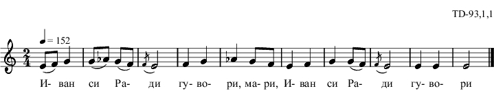

|
%{ td_093_1_01 } % \include "td-preamble.ly" % \score { \relative c' { \tempo 4 = 152 \time 2/4 e8( f) g4 | g8( aes) g( f) | \acciaccatura f8 e2 | f4 g | aes g8 f | e4 f | g g8( f) | \acciaccatura f8 e2 | e4 e | e2 \bar "|." } \addlyrics { И- ван си Ра- ди гу- во- ри, ма- ри, И- ван си Ра- ди гу- во- ри } % \layout { indent = #0 line-width = 190\mm ragged-right=##f } % \midi { \context { \Score tempoWholesPerMinute = #(ly:make-moment 152 4) } } % \header { opus = "TD-93,1,1" tagline = ##f } } |
|  |
| %Хороводна \begin{multicols}{2} Иван си Ради говори, мари /2 Либе ле Радо либе ле, мари /2 Ден доде Радо ден доде, мари Ден доде де Димитровден Калфите да си излязат мари Калфите от майсторите Аргати от чорбаджи, мари И ас ща Радо да с'ида Мило ли ти е за мени Както я мени за теби. Рада на Иван думаши Либе Иване, Иване Както е тебе за мене Така е мене за тебе Я почакай ма Иване да дойдат пости Коледни Да станат дните мънинки Я пък нощите големки (големи) Да преспа мама и тати и байно с млада невяста Да бръкна майци у пазуви А пък на тейко в джубови Да взема дребно отключи Сандъци да си отключа С имане да се назема Четено и нечетено Бройено и небройено Шиници жълти жълтици Кошове с бели грошове Иван на Рада думаше Либе ле Радо либе ле Не взимай Радо алтъне Че са тежко за носене На зимай жълти жълтици Че са леко за носене. \end{multicols} \sing{Пяла Ивана Вичева Стойкова} \bornYear{1911} \bornVillage{с. Хисаря, кв. Момина баня (Киселери)} \marriageVillage{c. Бегово} \marriageArea{Пловдивско} \marriageYear{1946} \record{декември 1964} |
|
td_093_1_01.ly, td_093_1_01.jpg, td_093_1_01.ps, td_093_1_01.eps, td_093_1_01.pdf, td_093_1_01.mid, td_093_1_01.txt, exam_eps_1.ps, exam_eps_1.pdf |
| Created on January 26, 2010 by NKK, updated on July 9, 2011. | bg/eng |
nkkirov<at>gmail.com |
home |
math |
{kind=link}